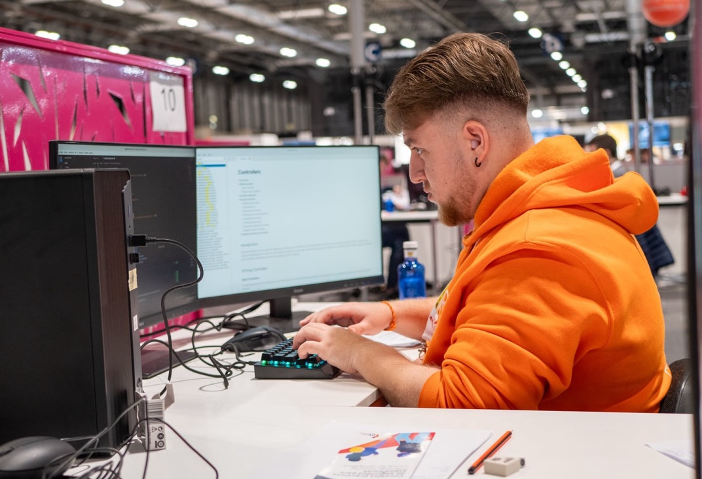
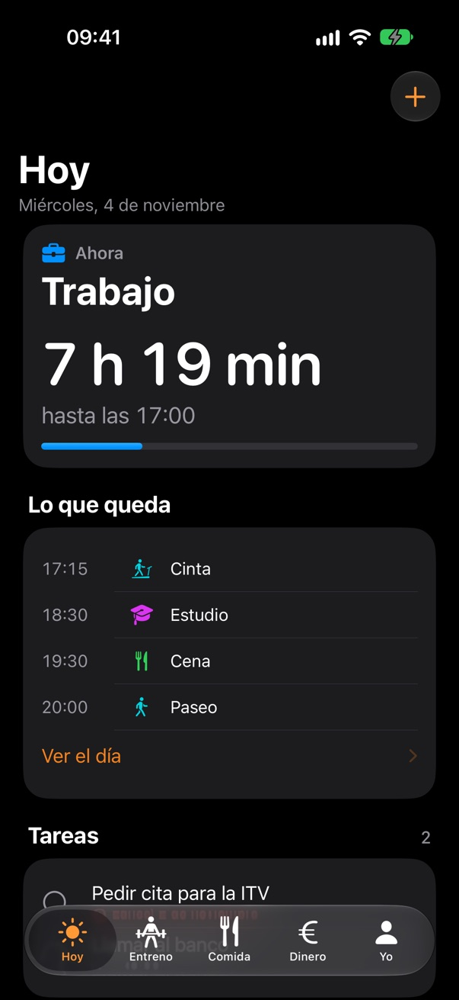
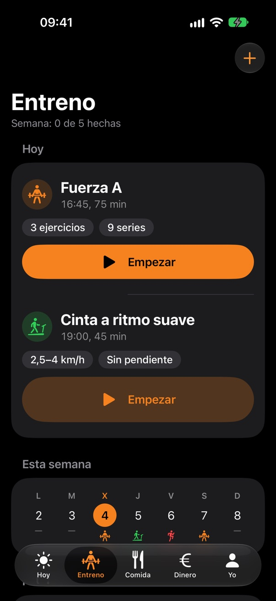
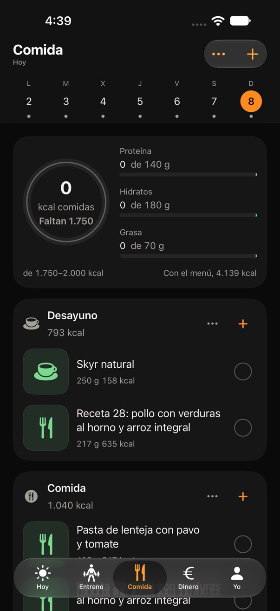
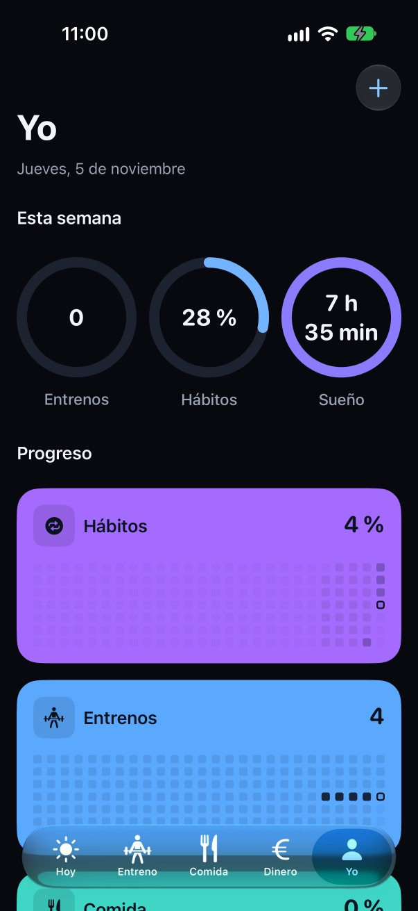

4+years of experience
Pau Fandos
Software engineer
Java · Spring · Angular · AI
- Company
- Cygnus Source
- Based in
- Madrid
- Role
- Software developer
- Home
- Sueca, Valencia
Software engineer
Java · Spring · Angular · AI
I develop software with Java, Spring and Angular, plus AI integrations.

I work at Cygnus Source in Madrid. I take part in the whole software lifecycle: backend with Java and Spring, interfaces with Angular and integrations of AI models into existing systems.
I work with clean architectures and microservices that plug into business processes modelled in BPMN. I test both the backend, with JUnit and Mockito, and the frontend, with Vitest and Playwright.
I integrate AI models as conversational assistants, using MCP (Model Context Protocol) and Spring AI. In some projects I also work with SDD (Spec Driven Development), using OpenSpec and different AI providers.
Over four years building software: web development at Imagina IT Solutions, large-scale projects at Sopra Steria and, since July 2025, Cygnus Source.
Development of microservices and Angular applications, and integration of AI assistants connected to different systems.
Java 21 · Spring Cloud Gateway · Oracle · Elasticsearch · Flowable · Angular · Spring AI · MCP
I worked in multidisciplinary teams on Java and Spring Boot microservices, event-driven integration, relational databases and business processes with Camunda, as well as Angular. I applied TDD in Scrum and Kanban teams.
On one critical, demanding project I played a key part in delivering it on time and I presented results to clients.
Java · Kotlin · Spring Boot · Camunda · RabbitMQ · Apache Artemis · Oracle SQL · PostgreSQL · Jenkins · Angular
Web development for local businesses with PHP, JavaScript and MySQL, and interface design with Photoshop and Illustrator.
HTML · CSS · JavaScript · PHP · MySQL · Bootstrap · WordPress · Photoshop · Illustrator
I am developing fandOS, my private app for managing and organising my day on iPhone, iPad and Mac. I build it with the SDD methodology, my own agent-kit and different AI providers.
Claude Code can query and modify my data through tools on an MCP server connected to my own API on Cloudflare Workers and D1, which the app syncs with. That way it updates my schedule, my weekly menu or my workouts, and I use it as a personal assistant. The screenshots are from the app with sample data.
Swift · SwiftUI · WidgetKit · TypeScript · Cloudflare Workers · D1 · MCP




agent-kit is a set of rules, tools and instructions for AI agents that I use every day to develop. It came from the need to coordinate different AI providers so they work together under my own rules and development style. Claude Code coordinates and hands out the tasks, and Codex reviews every change.
It includes a JavaScript command-line tool for Node.js that installs the rules and skills, checks how much of each provider’s usage allowance is left with ak usage and logs tool failures with ak report. The code is private.
JavaScript · Node.js · Claude Code · Codex
Usage example with fictional figures.
Claude: 5 h 42% ↻18:40 · week 37% ↻Fri 09:00 | Codex: 5 h 12% ↻17:10 · week 20% ↻Mon 09:00 ❯ ak usage --refresh
This was my final Higher Diploma in Web Application Development (DAW) project, completed during my internship at Sopra Steria from March to June 2023. It is a Wordle-style game in Spanish: the backend picks the secret word, checks each guess and returns the hints.
View the code on GitHubJava · Spring Boot · Hibernate · MySQL · Angular · TypeScript
I won the gold medal in the web development category at the CV Skills 2023 championship and represented the Valencian Community in the same category at the Spain Skills 2024 championship. The competition consists of building a complete web application across different timed tasks.
CV Skills 2023, the Valencian Community championship, in web development.
Madrid, April 2024. I represented the Valencian Community at the national championship.
Final mark, out of 10, of my Higher Diploma in Web Application Development.